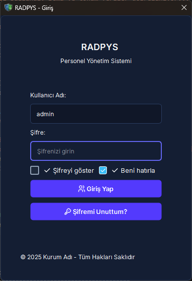
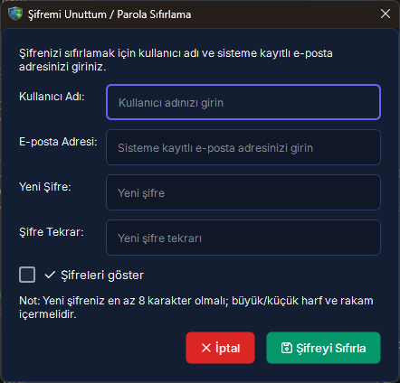
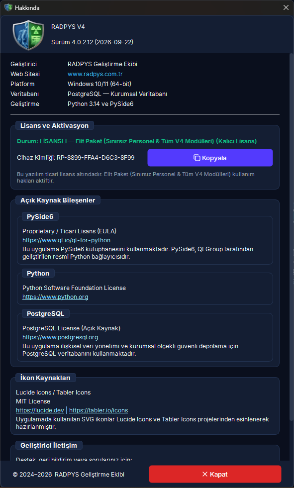
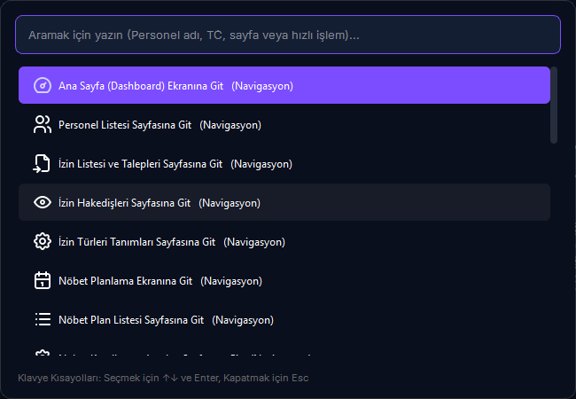

Kurulum, Başlatma ve İlk Giriş
RADPYS masaüstü uygulamasını güvenli tekil kilit altında başlatma, veritabanı motoru kontrolleri, ilk girişte zorunlu geçici şifre değişimi, Evrensel Arama Komut Paleti (Ctrl+K), Bildirim Merkezi ve lisans aktivasyon sürecini yönetmenizi sağlar.
Yapılacak İşlem: Birim sorumlusundan aldığınız kullanıcı adı ve geçici şifre ile giriş yapın. Açılan zorunlu şifre penceresinde en az 8 karakterli (büyük harf, küçük harf, rakam ve özel karakter içeren) yeni şifrenizi belirleyip [Kaydet] butonuna basın.
Sistem Güvencesi: Geçici şifre kalıcı olarak geçersiz kılınır; yetkili personel harici hiç kimse eski şifreyle hesabınıza erişemez ve tüm modüller yetkiniz dahilinde kullanıma açılır.
5N1K Kural ve Ayar Çözümleme Tablosu
Giriş ve başlangıç kontrollerinin amacı, çalışma mantığı ve kullanıcı etkileri
Başlatma ve Güvenli Giriş Süreç Akışı
Kritik Ekran Görünümleri ve Kullanım Noktaları




Adım Adım Operasyonel Eylem Akışı
radpys_destek_log.zip dosyasını teknik ekibe e-posta eki olarak gönderin.
Sıkça Sorulan Sorular ve Takılma Yönetimi
Şifremi unuttum, sisteme nasıl giriş yapabilirim?
Giriş ekranında yer alan [Şifremi Unuttum?] butonuna tıklayın. Kullanıcı adınızı ve sistemde kayıtlı e-posta adresinizi girerek yeni şifrenizi belirleyin. Sistemde tanımlı bir e-posta adresiniz yoksa birim sorumlunuza veya sistem yöneticinize başvurunuz; yönetici Kullanıcı Yönetimi ekranından tek tıkla geçici şifre atayabilir.
Lisans süresi dolduğunda verilerimiz silinir mi?
Kesinlikle hayır. Lisans süresinin dolması yalnızca ekran erişimlerini kilitler; veritabanındaki nöbetler, personeller, dozimetre ve RKE kayıtları hiçbir şekilde silinmez veya bozulmaz. Sistem Yöneticisi yeni lisans anahtarını girdiği anda tüm sistem kaldığı yerden eksiksiz çalışmaya devam eder.
Beni Hatırla seçeneğini işaretlediğimde şifrem bilgisayarda açık kalır mı?
Hayır. Güvenlik ve KVKK gereği [Beni Hatırla] seçeneği yalnızca kullanıcı adınızı depolar; parolanızı kesinlikle diske veya yerel ayarlara yazmaz. Her oturumda şifrenin elle yazılması zorunludur.
PostgreSQL veritabanı bağlantı hatası alıyorum, ne yapmalıyım?
Uygulama açılışında gelen hata kutusundaki [Servisi Yönetici Olarak Başlat (UAC)] butonuna tıklayın ve Windows izin penceresine "Evet" deyin. Servis otomatik olarak başlatılacaktır. Sorun devam ederse Windows Hizmetler (services.msc) ekranından PostgreSQL servisinin durumunu kontrol ediniz.